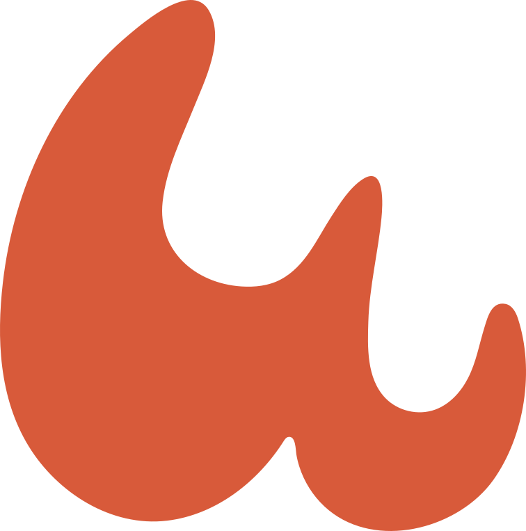

01 / SYSTEM
Overview
System identity, uptime and resource information.

welouryWeloury brings system information, processes, services, storage, network activity, logs and automation into one place. It is being built for people who would rather understand their machine without jumping between a pile of separate tools.
The backend and frontend are in the repository, but the Tauri desktop project is currently missing from the public tree. There are no installers or published releases yet. Windows and macOS also need testing on real hardware.
The current interface covers the main parts of day-to-day system inspection, with some features depending on the operating system and tools installed locally.
System identity, uptime and resource information.
Find running processes, inspect details and manage them with confirmation.
View service state and use supported service controls.
Inspect mounted drives, usage and available hardware information.
See interfaces, addresses, listening ports and active connections.
Inspect Docker containers and their recent activity.
Follow application logs and browse recorded system activity.
Watch processes, services, ports, endpoints and resource thresholds.
Set up event-based rules and scheduled actions.
The app is built around a local Go service and a desktop interface. Its data is stored on the machine rather than in a hosted account.
The source is public. The backend and frontend can be built and checked separately; a complete desktop build is not available until the Tauri project is restored and tested end to end.